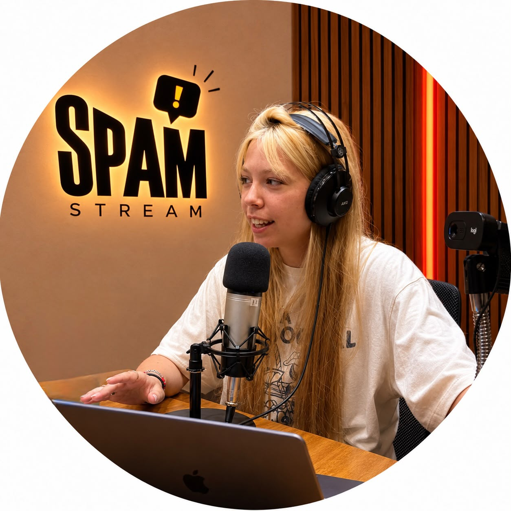
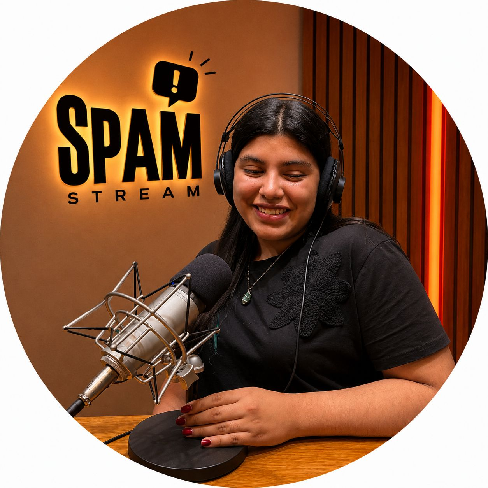
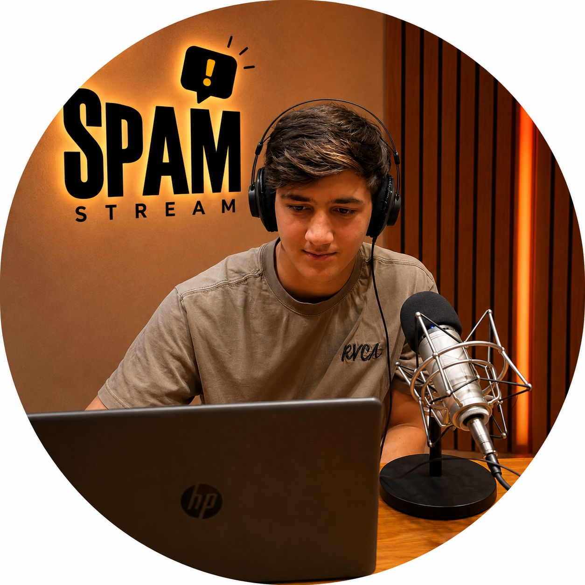

Valentina Colucci
Editora de Lore Semanal & Conducción
Firmas: Airbag en River • Michael Jackson
📷 @valencolucci_ Ver notas y perfil →SPAM es un medio y programa multimedial nacido para ordenar el caos del internet: viralidad, algoritmos, tecnologías y debates que atraviesan nuestra vida cotidiana.
Existe para contar y explicar qué está pasando en internet, poniendo en contexto las tendencias, debates y fenómenos digitales que aparecen todos los días, para que nuestra audiencia no solo consuma sino que también pueda entenderlos.
Priorizamos los fenómenos que surgen en redes y medios con impacto directo en el día a día. Abordamos estos temas desde una mirada periodística, crítica y cercana, buscando explicar antes que informar.
Buscamos cubrir el espacio de mirar detrás del contenido cotidiano de internet y explicar los fenómenos digitales evitando quedarnos únicamente en lo viral o superficial. Incorporamos las voces y miradas del equipo, contrastando datos, herramientas y repercusiones.
Directo y dinámico: hablamos de internet como hablamos entre nosotros, sin vueltas, con humor y haciéndonos las preguntas que todos nos hacemos frente a la pantalla.
Personas que consumen, producen o trabajan con contenido en redes sociales: creadores de contenido, community managers, periodistas, publicistas y cualquier usuario que busque comprender por qué las plataformas funcionan como funcionan.
Medio producido íntegramente por estudiantes universitarios de Periodismo. Hacé clic en cada integrante para ver sus contenidos:
Editora de Lore Semanal & Conducción
Firmas: Airbag en River • Michael Jackson
📷 @valencolucci_ Ver notas y perfil →Editora de Detrás de lo Viral // Tech & Sociedad
Firmas: 11-S y drones • El fenómeno rosa
📷 @aymapereyra_ Ver notas y perfil →
Editora de Spam Update // Novedades & Y2K
Firmas: Mago IA Mercado Pago • El regreso del brillo
📷 @piluteres Ver notas y perfil →
Editora de Detrás de lo Viral // Algoritmos
Firma: Flores amarillas del 21-S
📷 @delfinaa.galvan Ver notas y perfil →
Editor General & Fuera de Juego
Rol: Coordinación editorial & Streaming en vivo
📷 @_agussanchez89 Ver notas y perfil →